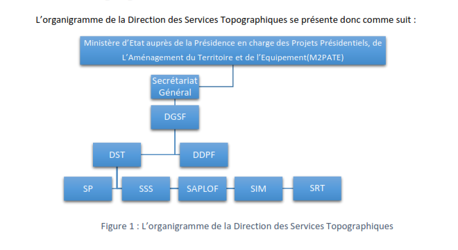

À propos de la Direction des Services Topographiques
La Direction des Services Topographiques (DST) est un service public créé pour assurer la gestion et la production de données géospatiales essentielles à l'aménagement du territoire, à la gestion des infrastructures et à la planification urbaine. Notre mission consiste à fournir des informations géographiques de haute précision pour soutenir les décideurs publics et privés dans leurs projets.
Notre Histoire
La DST a été créée il y a plus de 30 ans avec pour objectif de centraliser et standardiser les données topographiques à travers le pays. Depuis sa création, la direction n'a cessé d'évoluer, en intégrant des technologies de plus en plus sophistiquées, comme les systèmes d'information géographique (SIG), les levés LiDAR et les drones.
Nos Objectifs
- Fournir des données géospatiales de qualité : Nous nous engageons à fournir des cartes, des relevés et des bases de données géographiques fiables, à jour et précises.
- Soutenir l'aménagement durable du territoire : Nos données sont utilisées pour aider à la planification urbaine, la gestion des ressources naturelles et la construction d'infrastructures.
- Innover avec les technologies de pointe : Nous suivons les dernières avancées en matière de géomatique pour garantir des relevés de haute qualité et la gestion optimale de l'information géospatiale.
Notre Structure
La DST est composée de plusieurs divisions spécialisées, chacune ayant un rôle spécifique dans la gestion des données géospatiales :
- Division Cartographique : Responsable de la création et de la mise à jour des cartes et des plans.
- Division des Levés Topographiques : Réalisation des relevés de terrain et collecte de données géographiques sur le terrain.
- Division Géodésique : Maintenance et gestion des réseaux géodésiques pour assurer la précision des données.
- Division des Systèmes d'Information Géographique (SIG) : Gestion et analyse des données géospatiales à l’aide de logiciels SIG avancés.
Nos Valeurs
La DST repose sur des valeurs fondamentales qui guident chacune de nos actions :
- Précision : Nous nous engageons à fournir des données de qualité irréprochable.
- Innovation : Nous intégrons les dernières technologies pour garantir l'excellence de nos services.
- Transparence : Nous mettons nos données à disposition des utilisateurs dans un format accessible et compréhensible.
- Collaboration : Nous travaillons main dans la main avec les acteurs publics et privés pour soutenir les projets d'aménagement.
Organigramme de la DST
